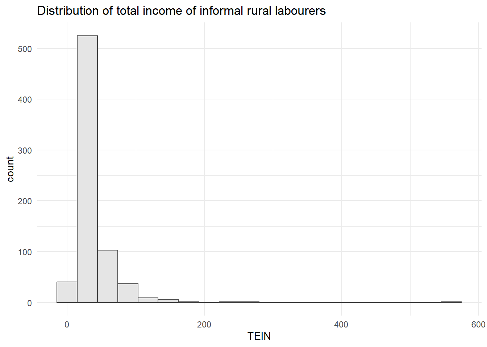
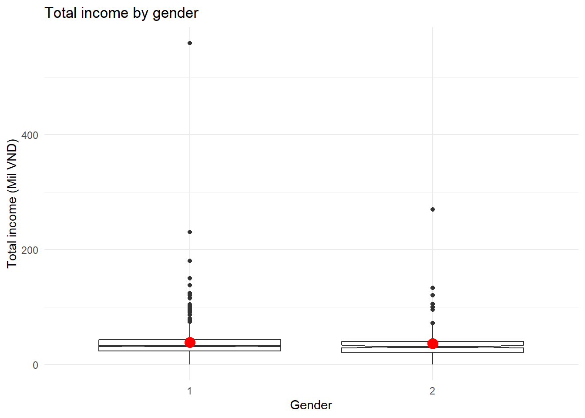
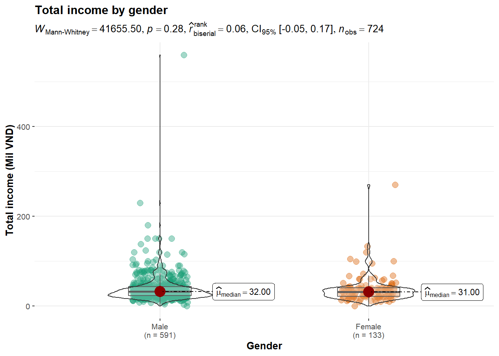
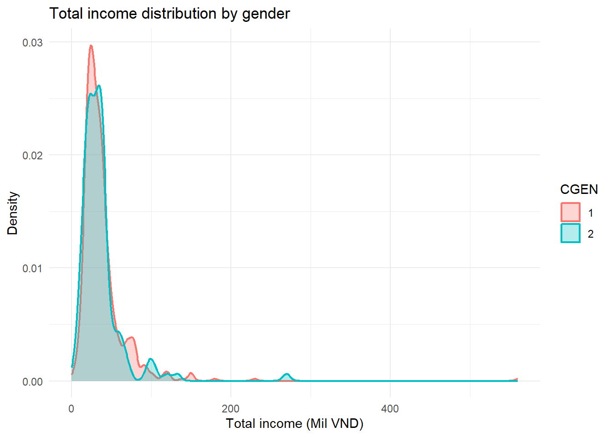
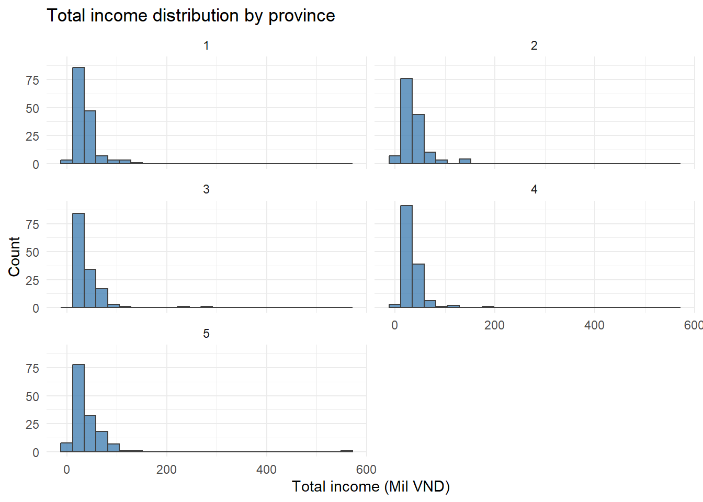
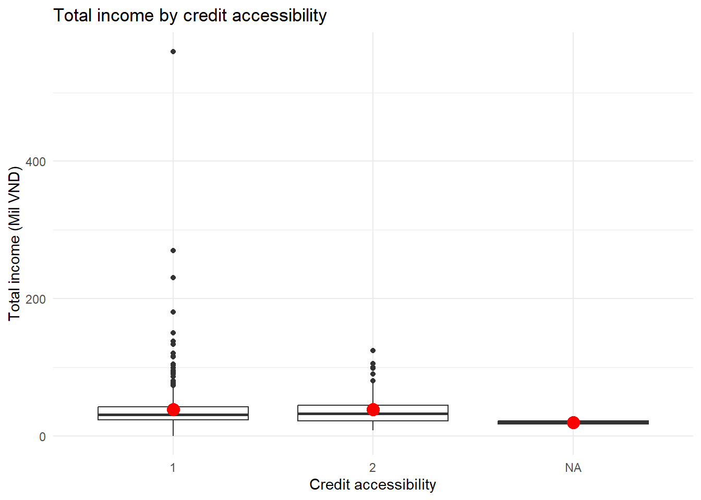
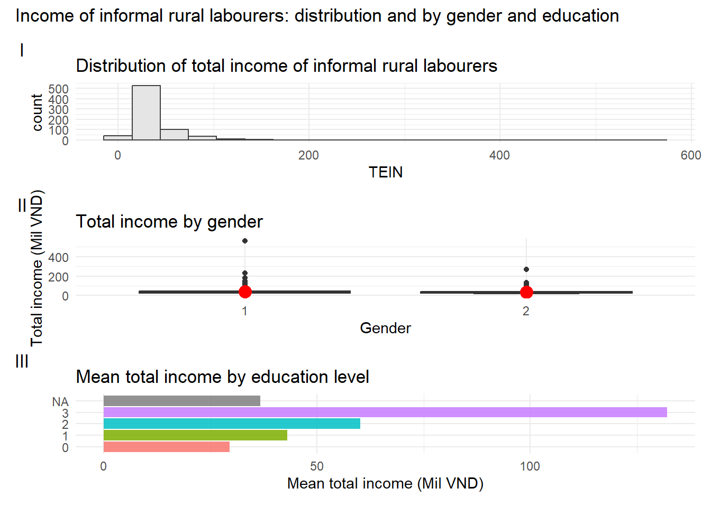

pacman::p_load(tidyverse, patchwork, scales, readxl)Take-home Exercise 1: Survey Analysis with Data Visualisation
Overview
This handout addresses the context, task, expectations and grading criteria of Take-home Exercise 1. Creating enlightening and truthful data visualisations involves focusing on accuracy, transparency, and the ability to effectively communicate insights—presenting data in a way that is both informative and aesthetically pleasing so the audience can grasp the information quickly and accurately.
Setting the scene
Survey analysis is the process of transforming raw survey data into decision-relevant insights. It focuses on identifying patterns, trends, and relationships within responses by using descriptive methods (such as counts, percentages, and averages) as well as inferential methods (such as correlations and significance tests) to interpret results and inform decision-making.
This take-home exercise selects the dataset “Income of informal labourers in rural areas: A survey dataset of northern mountainous regions in Vietnam” (Mai et al., Data in Brief 38, 2021) and applies visually-driven survey analysis methods to reveal and communicate key observations.
The task and conventions
- The task: Select one of the two survey datasets; apply appropriate, visually-driven survey analysis methods; reveal and communicate at least five and no more than ten key observations.
- The designing tool: Data are processed using the tidyverse family of packages. Data visualisation is prepared using ggplot2 and its extensions. No interactive data visualisation is required.
- The write-up: Include (i) a reproducible description of the procedures used to prepare the analytical visualisations, and (ii) a write-up of no more than 150 words per data visualisation, describing and discussing the patterns revealed by each visualisation.
- Deliverable: At least five and no more than ten key observations, each supported by one data visualisation and its write-up.
ImportantImportant
Where to get the data
The PDF article describes the dataset only; the raw data are not in the PDF. Download the spreadsheet (725 rows × 29 columns) from Mendeley Data, save it into the project data/ folder, and update the file name in the code below if needed.
Download link: https://data.mendeley.com/datasets/s6p7dwj3j6/1 (DOI: 10.17632/s6p7dwj3j6.1)
Reproducible procedures
The write-up of the take-home exercise includes a reproducible description of the procedures used to prepare the analytical visualisations. The following sections document how the data are loaded, prepared, and visualised so that the analysis can be reproduced.
Installing and loading R packages
Importing the data
The code chunk below imports Upload for elsiver.xlsx into the R environment by using read_excel() of the readxl package. readxl is used here because the dataset is provided in Excel format. Categorical columns are converted to character so that fct_reorder() and factor-based plots work correctly when the Excel file stores them as numbers.
survey <- read_excel("data/Upload for elsiver.xlsx") %>%
mutate(across(where(is.character), ~ na_if(., ""))) %>%
mutate(across(any_of(c("CPRO", "CGEN", "CRAC", "CJOB", "CQUI", "FEDU", "FVTP", "FCRA", "FTAP")), as.character)) %>%
filter(is.finite(TEIN))
survey# A tibble: 724 × 30
CPRO CGEN CRAC CJOB CQUI TEIN TAIN TSII TOIN FEDU FVTP FCRA FTAP
<chr> <chr> <chr> <chr> <chr> <dbl> <dbl> <dbl> <dbl> <chr> <chr> <chr> <chr>
1 1 1 2 1 3 37 25 7 5 1 1 1 1
2 1 1 2 1 5 25 22 0 3 0 1 2 1
3 1 2 2 3 3 33 25 0 8 1 1 1 2
4 1 1 2 1 3 35 30 5 0 1 1 1 <NA>
5 1 2 2 1 3 36 28 0 8 0 1 1 2
6 1 2 2 <NA> 4 21 17 0 4 0 1 1 2
7 1 1 2 3 1 35 25 0 10 3 2 1 2
8 1 1 2 1 3 36 28 0 8 0 1 1 2
9 1 1 2 3 3 38 26 12 0 2 2 1 2
10 1 1 2 1 3 30 22 2 6 0 1 1 2
# ℹ 714 more rows
# ℹ 17 more variables: LHO1 <dbl>, LHO2 <dbl>, LHO3 <dbl>, LHO4 <dbl>,
# LCRE <dbl>, LSAV <dbl>, LWDA <dbl>, PPO1 <dbl>, PPO2 <dbl>, PPO3 <dbl>,
# PPO4 <dbl>, PPO5 <dbl>, ARO1 <dbl>, ARO2 <dbl>, ARO3 <dbl>, ARO4 <chr>,
# ARO5 <dbl>One row with missing or non-finite total income (TEIN) is excluded so that all visualisations use a consistent analytic sample (724 rows). There are a total of 29 columns in the survey tibble. The variables used in this analysis are grouped as follows (see the article Table 1 for the full list). Categorical variables are stored as codes (e.g. 1, 2 for gender; 1–5 for province) in the data; the article or codebook gives the mapping to labels (e.g. Male/Female, province names).
- The characteristics are: CPRO (province), CGEN (gender), CRAC (race), CJOB (career), and CQUI (income quintile).
- The income variables (scale, in Mil VND) are: TEIN (total income), TAIN (agricultural income), TSII (service and industrial income), and TOIN (others).
- The factors are: FEDU (education), FVTP (vocational training), FCRA (credit accessibility), and FTAP (technological application).
Data preparation
We keep the data in tidy form. Summary tables for some of the plots are built by using dplyr for grouping and summarising.
The code chunk below creates a summary by province.
by_province <- survey %>%
group_by(CPRO) %>%
summarise(
n = n(),
mean_income = mean(TEIN, na.rm = TRUE),
.groups = "drop"
)
by_province# A tibble: 5 × 3
CPRO n mean_income
<chr> <int> <dbl>
1 1 150 37.6
2 2 144 38.3
3 3 141 39.8
4 4 143 33.0
5 5 146 41.2The code chunk below creates a summary by race.
by_race <- survey %>%
count(CRAC, name = "count") %>%
mutate(pct = count / sum(count) * 100)
by_race# A tibble: 2 × 3
CRAC count pct
<chr> <int> <dbl>
1 1 336 46.4
2 2 388 53.6The code chunk below creates a summary by education level.
by_edu <- survey %>%
group_by(FEDU) %>%
summarise(
n = n(),
mean_tein = mean(TEIN, na.rm = TRUE),
.groups = "drop"
)
by_edu# A tibble: 5 × 3
FEDU n mean_tein
<chr> <int> <dbl>
1 0 473 29.4
2 1 136 43.0
3 2 73 60.1
4 3 19 132.
5 <NA> 23 36.7Working with Geometric objects
Plotting a histogram
Plot a histogram for total income (TEIN).
p1 <- ggplot(data = survey,
aes(x = TEIN)) +
geom_histogram(bins = 20,
colour = "grey25",
fill = "grey90") +
ggtitle("Distribution of total income of informal rural labourers") +
theme_minimal()
p1
The histogram shows that total income (TEIN) in the sample is right-skewed. Most informal labourers have total income between about 20 and 50 million VND; the centre of the distribution lies in this range. The spread is wide, with a long right tail indicating a minority with much higher income. This pattern implies substantial inequality among rural informal workers in the northern mountainous regions: most earn modest amounts, while a smaller group earns considerably more, possibly reflecting different types of informal work or access to better opportunities.
Plotting a boxplot
The code chunk below plots the distribution of total income by gender. We use geom_boxplot() with notch = TRUE. The mean value is added by using stat_summary() and overriding the default geom, as in Hands-on Exercise 1.
p2 <- ggplot(data = survey,
aes(y = TEIN, x = CGEN)) +
geom_boxplot(notch = TRUE) +
stat_summary(geom = "point",
fun = "mean",
colour = "red",
size = 4) +
labs(x = "Gender", y = "Total income (Mil VND)") +
ggtitle("Total income by gender") +
theme_minimal() +
theme(legend.position = "none")
p2
The boxplots show that median and mean (red point) total income are similar for the two gender groups. The interquartile ranges and overall spread are comparable, and both groups have some upper-end outliers. The notches overlap, suggesting that the median income does not differ significantly between genders in this sample. The gender income gap among these informal rural labourers is therefore not large; any difference is less striking than the variation within each group.
Plotting a bar chart
By default, the bar chart of ggplot2 is in vertical form. The code chunk below uses geom_bar() to count respondents by province, then flips to a horizontal bar chart by using coord_flip(), as in Hands-on Exercise 1 (Working with Coordinate).
p3 <- ggplot(data = survey,
aes(x = CPRO)) +
geom_bar() +
coord_flip() +
labs(x = NULL, y = "Count") +
ggtitle("Number of respondents by province") +
theme_minimal()
p3
Respondent counts are fairly balanced across the five provinces, with sample sizes ranging from about 141 to 150 per province. This balance supports the representativeness of the survey across the northern mountainous regions and allows comparisons of income and other outcomes by province without one region dominating the overall results. The design appears to aim for similar coverage in each province.
Mean total income by education level
For pre-summarised data we use geom_col(). The code chunk below plots mean total income by education level. Bars are ordered by mean income using fct_reorder() and the chart is flipped to horizontal using coord_flip().
p4 <- ggplot(data = by_edu,
aes(x = fct_reorder(as.character(FEDU), mean_tein),
y = mean_tein,
fill = as.character(FEDU))) +
geom_col(alpha = 0.85) +
coord_flip() +
labs(x = NULL, y = "Mean total income (Mil VND)") +
ggtitle("Mean total income by education level") +
theme_minimal() +
theme(legend.position = "none")
p4
There is a clear positive association between education level and mean total income. Mean income rises from about 29 Mil VND (education level 0) to 43, 60, and about 132 Mil VND for levels 1, 2, and 3 respectively. The highest education category has a much higher mean, indicating that better education is associated with substantially higher income among these informal labourers. Respondents with missing education have a moderate mean (around 37 Mil VND), between the lowest and middle levels. The pattern supports the importance of education for income in this population.
Plotting the kernel estimate density plot
The code chunk below plots the distribution of total income in a kernel density estimate plot. Two density lines are drawn by using colour and fill arguments of aes(), as in Hands-on Exercise 1.
p5 <- ggplot(data = survey,
aes(x = TEIN, colour = CGEN, fill = CGEN)) +
geom_density(alpha = 0.3, linewidth = 0.8) +
labs(x = "Total income (Mil VND)", y = "Density") +
ggtitle("Total income distribution by gender") +
theme_minimal()
p5
The two density curves overlap heavily, with peaks in a similar range (roughly 25–45 Mil VND). Spread and shape are similar for both gender groups; there is no strong shift of one distribution relative to the other. The overlap indicates that the income distribution is largely similar for males and females in this sample. Any small differences in peak location or tail length are minor compared with the shared pattern of moderate centre and right-skewed spread.
Working with facets
Working with facet_wrap()
facet_wrap() wraps a 1d sequence of panels into 2d. The code chunk below plots a trellis plot using facet_wrap() for total income by province.
p6 <- ggplot(data = survey,
aes(x = TEIN)) +
geom_histogram(bins = 25,
colour = "grey25",
fill = "steelblue",
alpha = 0.8) +
facet_wrap(~ CPRO, ncol = 2) +
labs(x = "Total income (Mil VND)", y = "Count") +
ggtitle("Total income distribution by province") +
theme_minimal()
p6
The five panels show that income distribution shape and centre vary by province. Provinces 1, 2, 3 and 5 have similar centres (mean income around 38–41 Mil VND), while province 4 has a lower centre (about 33 Mil VND). All panels are right-skewed, but spread and the length of the right tail differ. This suggests regional heterogeneity: one province has notably lower average income, and the shape of the distribution is not identical across provinces, which may reflect different economic structures or labour mix.
Total income by credit accessibility
The code chunk below plots the distribution of total income by credit accessibility in a boxplot. The mean is added by using stat_summary().
p7 <- ggplot(data = survey,
aes(y = TEIN, x = FCRA)) +
geom_boxplot(notch = FALSE) +
stat_summary(geom = "point",
fun = "mean",
colour = "red",
size = 4) +
labs(x = "Credit accessibility", y = "Total income (Mil VND)") +
ggtitle("Total income by credit accessibility") +
theme_minimal() +
theme(legend.position = "none")
p7
The boxplots show how total income varies across credit accessibility groups. If the red points (means) and medians increase from lower to higher credit access, this suggests that access to credit is associated with higher income in this sample—consistent with credit enabling investment or smoothing consumption. Spread and outliers may differ across groups. The figure allows a visual check of whether the income–credit relationship is monotonic or whether some groups (e.g. middle access) stand out, which can inform further modelling or policy discussion.
Creating composite graphics: patchwork methods
We use the ggplot2 extension patchwork to combine separate ggplot2 graphs into a single figure. The division sign / stacks plots vertically so that each plot has its own row and titles do not overlap. plot_annotation() with tag_levels = 'I' provides panel labels.
p1 / p2 / p4 +
plot_annotation(
title = "Income of informal rural labourers: distribution and by gender and education",
tag_levels = "I"
)
Panel I shows the overall income distribution is right-skewed, with most labourers in the lower–middle income range. Panel II indicates that the gender gap in total income is small; medians and means are similar for both groups. Panel III shows a strong education–income gradient: mean income rises sharply with education level. Taken together, the main findings are: (1) income among these informal rural labourers is uneven and right-skewed; (2) gender differences in income are modest; and (3) education is a strong predictor of higher mean income, suggesting that policies supporting education may help improve outcomes in this population.
Submission instructions
- This is an individual assignment. Work on the take-home exercise and prepare your submission individually.
- The analytical visualisations are prepared using R and appropriate R packages (tidyverse, ggplot2 and its extensions). No interactive data visualisation is used.
- The write-up is in Quarto html document format.
- You are required to publish the write-up on Netlify.
- Submission date: The completed take-home exercise is due on 15th February 2026 (Sunday) by 11:59pm.
References
- Mai, A.N., Pham, T.H., Hoang, H.T., Nguyen, H.H.T. (2021). Income of informal labourers in rural areas: A survey dataset of northern mountainous regions in Vietnam. Data in Brief 38, 107292. https://doi.org/10.1016/j.dib.2021.107292
- Mendeley Data: https://data.mendeley.com/datasets/s6p7dwj3j6/1
- Creating enlightening and truthful data visualization. Procedia Computer Science (2021).
- Wickham et al., ggplot2: Elegant Graphics for Data Analysis. Springer.
- Hands-on Exercise 1 and 2, ISSS608 Visual Analytics.